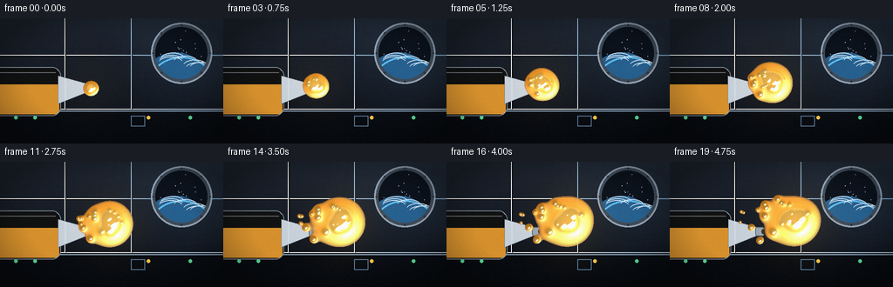
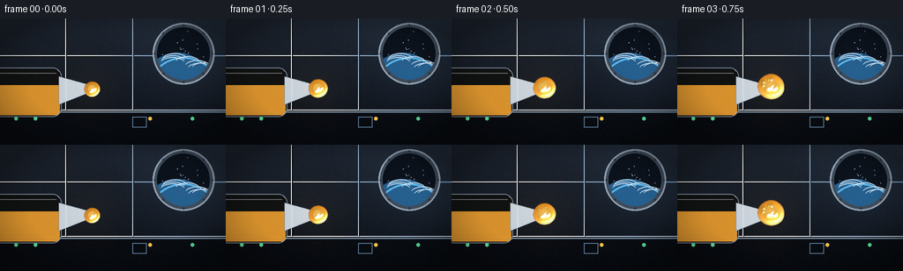

CODING AGENTS AS PIXEL WORLD MODELS
traex/Seed-2.1-Pro-0915 · phygen_004
点击播放 · 原生 RGB 像素
逐轮保存的候选
回放视频、检查图与代码变化。
每份候选均可单独播放。实际图片检查记录在下方工具轨迹中。
候选 01播放与检查图
点击播放 · 原生 RGB 像素


展开代码变化
--- 上一保存版本
+++ 本次保存版本
@@ -0,0 +1,336 @@
+"""Generate: a squeeze of honey slowly released inside a space station.
+
+Pure numpy + PIL rendering at 2x supersampling:
+ - station interior (panels, porthole with Earth, squeeze pouch/nozzle)
+ - honey as a metaball field: growing core, orbiting lobes, a pinch-off
+ strand and droplets drifting outward in zero gravity
+ - liquid shading from the field gradient (diffuse + specular), warm glow
+"""
+import numpy as np
+from PIL import Image, ImageDraw, ImageFilter
+
+import artifact_io
+
+W, H, N, FPS = 256, 144, 20, 4.0
+S = 2 # supersampling factor
+SW, SH = W * S, H * S
+
+rng = np.random.default_rng(7)
+
+# ---------------------------------------------------------------- geometry
+TIP = np.array([104.0, 80.0]) # nozzle tip (output-pixel coords)
+
+
+def smoothstep(e0, e1, x):
+ x = np.clip((x - e0) / (e1 - e0), 0.0, 1.0)
+ return x * x * (3 - 2 * x)
+
+
+def ease(x):
+ return x * x * (3 - 2 * x)
+
+
+def core_state(t):
+ """Center / radius of the main honey mass at normalized time t."""
+ cx = TIP[0] + 40.0 * ease(t)
+ cy = TIP[1] - 10.0 * t - 3.0 * np.sin(np.pi * t)
+ r = 6.0 + 14.0 * (2 * t - t * t)
+ return np.array([cx, cy]), r
+
+
+# pre-generated droplets: (emit_frame, dir, speed_px_per_frame, radius)
+droplets = []
+for _ in range(16):
+ te = rng.uniform(0.05, 0.72)
+ theta = rng.uniform(-0.95 * np.pi, 0.05 * np.pi) # fan pointing right
+ d = np.array([np.cos(theta), np.sin(theta)])
+ sp = rng.uniform(0.55, 1.75)
+ rd = rng.uniform(1.2, 3.3)
+ droplets.append((te * (N - 1), d, sp, rd))
+# four slow tendril lobes that stay merged with the core for a while
+for k in range(4):
+ te = rng.uniform(0.0, 0.18)
+ theta = (-0.85 + k * 0.45 + rng.uniform(-0.12, 0.12)) * np.pi
+ d = np.array([np.cos(theta), np.sin(theta)])
+ droplets.append((te * (N - 1), d, rng.uniform(0.18, 0.42),
+ rng.uniform(2.8, 4.6)))
+
+# ---------------------------------------------------------------- background
+def make_porthole_tile():
+ r = 30 * S
+ tile = Image.new("RGBA", (2 * r, 2 * r), (0, 0, 0, 0))
+ d = ImageDraw.Draw(tile)
+ d.ellipse((0, 0, 2 * r - 1, 2 * r - 1), fill=(5, 8, 14, 255))
+ # stars
+ sr = np.random.default_rng(11)
+ for _ in range(26):
+ a = sr.uniform(0, 2 * np.pi)
+ rr = sr.uniform(0, r * 0.92)
+ x, y = r + rr * np.cos(a), r + rr * np.sin(a)
+ b = int(sr.uniform(110, 230))
+ s = 1 if sr.random() < 0.8 else 2
+ d.ellipse((x - s, y - s, x + s, y + s), fill=(b, b, min(255, b + 20), 255))
+ # Earth limb near the bottom of the window
+ ecx, ecy, er = r, r + int(46 * S), int(42 * S)
+ d.ellipse((ecx - er, ecy - er, ecx + er, ecy + er), fill=(12, 38, 62, 255))
+ # lit day side offset toward the upper-left limb
+ lr = int(er * 0.96)
+ d.ellipse((ecx - lr - int(7 * S), ecy - lr - int(7 * S),
+ ecx + lr - int(7 * S), ecy + lr - int(7 * S)),
+ fill=(34, 92, 138, 210))
+ # atmosphere rim
+ d.ellipse((ecx - er, ecy - er, ecx + er, ecy + er),
+ outline=(96, 190, 240, 220), width=int(2.4 * S))
+ # a few cloud streaks
+ cr = np.random.default_rng(23)
+ for _ in range(7):
+ a = cr.uniform(0.25 * np.pi, 0.75 * np.pi)
+ rr = cr.uniform(er * 0.78, er * 1.0)
+ x = ecx + rr * np.cos(a)
+ y = ecy - rr * np.sin(a)
+ d.arc((x - 14 * S, y - 7 * S, x + 14 * S, y + 7 * S),
+ 200, 340, fill=(210, 230, 245, 150), width=max(1, int(1.1 * S)))
+ # circular mask
+ mask = Image.new("L", (2 * r, 2 * r), 0)
+ ImageDraw.Draw(mask).ellipse((0, 0, 2 * r - 1, 2 * r - 1), fill=255)
+ tile.putalpha(mask)
+ return tile
+
+
+def build_background():
+ yy = np.linspace(0, 1, SH, dtype=np.float32)[:, None]
+ top = np.array([30, 37, 48], dtype=np.float32)
+ bot = np.array([12, 16, 23], dtype=np.float32)
+ bg = (top[None] * (1 - yy) + bot[None] * yy)
+ bg = np.repeat(bg[:, None, :], SW, axis=1)
+ img = Image.fromarray(bg.astype(np.uint8), "RGB").convert("RGBA")
+ d = ImageDraw.Draw(img, "RGBA")
+
+ # wall panel seams
+ for y in (42 * S, 104 * S):
+ d.line((0, y, SW, y), fill=(255, 255, 255, 10), width=S)
+ d.line((0, y + S, SW, y + S), fill=(0, 0, 0, 38), width=S)
+ for x in (74 * S, 150 * S):
+ d.line((x, 0, x, 104 * S), fill=(255, 255, 255, 8), width=S)
+ d.line((x + S, 0, x + S, 104 * S), fill=(0, 0, 0, 30), width=S)
+ # lower equipment console
+ d.rectangle((0, 106 * S, SW, SH), fill=(8, 11, 16, 255))
+ d.rectangle((0, 106 * S, SW, 106 * S + S), fill=(120, 140, 160, 60))
+ for i, x in enumerate((18, 40, 170, 218)):
+ col = (90, 220, 150, 200) if i != 2 else (240, 190, 70, 200)
+ d.ellipse((x * S - 2 * S, 114 * S - 2 * S,
+ x * S + 2 * S, 114 * S + 2 * S), fill=col)
+ d.rectangle((150 * S, 112 * S, 166 * S, 124 * S),
+ outline=(90, 120, 150, 120), width=S)
+
+ # porthole upper right
+ px, py, pr = 208 * S, 40 * S, 30 * S
+ d.ellipse((px - pr - 5 * S, py - pr - 5 * S,
+ px + pr + 5 * S, py + pr + 5 * S),
+ fill=(60, 70, 82, 255), outline=(120, 132, 146, 255), width=S)
+ tile = make_porthole_tile()
+ img.alpha_composite(tile, (px - pr, py - pr))
+ d.ellipse((px - pr - 5 * S, py - pr - 5 * S,
+ px + pr + 5 * S, py + pr + 5 * S),
+ outline=(150, 162, 176, 255), width=max(2, 2 * S))
+ for a in np.linspace(0, 2 * np.pi, 8, endpoint=False):
+ bx = px + (pr + 2.5 * S) * np.cos(a)
+ by = py + (pr + 2.5 * S) * np.sin(a)
+ d.ellipse((bx - S, by - S, bx + S, by + S), fill=(40, 46, 56, 255))
+
+ # cool key glow from the window
+ glow = Image.new("L", (SW, SH), 0)
+ gd = ImageDraw.Draw(glow)
+ gd.ellipse((px - 55 * S, py - 55 * S, px + 55 * S, py + 55 * S), fill=70)
+ glow = glow.filter(ImageFilter.GaussianBlur(26 * S))
+ blu = Image.new("RGBA", (SW, SH), (90, 140, 190, 0))
+ blu.putalpha(glow.point(lambda v: int(v * 0.35)))
+ img.alpha_composite(blu)
+ return img
+
+
+BG = build_background()
+
+# static dust motes and film grain (fixed across frames -> no flicker)
+_motes = []
+for _ in range(14):
+ _motes.append((rng.uniform(0, SW), rng.uniform(0, SH),
+ rng.uniform(2, 7), rng.uniform(0.1, 0.5)))
+_grain = rng.normal(0, 2.2, (SH, SW, 1)).astype(np.float32)
+_vig_y, _vig_x = np.mgrid[0:SH, 0:SW]
+_vig = 1.0 - 0.32 * np.clip(
+ (((_vig_x - SW / 2) / (SW / 2)) ** 2 + ((_vig_y - SH / 2) / (SH / 2)) ** 2 - 0.55)
+ / 0.9, 0, 1)
+_vig = _vig[..., None].astype(np.float32)
+
+# ---------------------------------------------------------------- bottle
+def draw_bottle(t):
+ layer = Image.new("RGBA", (SW, SH), (0, 0, 0, 0))
+ d = ImageDraw.Draw(layer, "RGBA")
+ sq = 0.055 * np.exp(-((t - 0.14) / 0.13) ** 2) # squeeze deformation
+ right = int((70 - 6 * sq) * S)
+ lft, top, bot = int(-8 * S), int(56 * S), int(112 * S)
+ # body
+ body = (lft, top, right, bot)
+ d.rounded_rectangle(body, radius=10 * S, fill=(214, 224, 232, 242),
+ outline=(120, 134, 148, 255), width=S)
+ # honey inside the pouch
+ inner = Image.new("RGBA", (SW, SH), (0, 0, 0, 0))
+ di = ImageDraw.Draw(inner)
+ di.rectangle((lft + 2 * S, int(76 * S), right - 2 * S, bot - 2 * S),
+ fill=(214, 138, 30, 235))
+ msk = Image.new("L", (SW, SH), 0)
+ ImageDraw.Draw(msk).rounded_rectangle(
+ (lft + S, top + S, right - S, bot - S), radius=9 * S, fill=255)
+ inner.putalpha(Image.eval(msk, lambda v: int(v * 235 / 255)))
+ layer.alpha_composite(inner)
+ # body outline + plastic highlight on top
+ d.rounded_rectangle(body, radius=10 * S,
+ outline=(120, 134, 148, 255), width=S)
+ d.line((lft + 6 * S, top + 6 * S, right - 6 * S, top + 6 * S),
+ fill=(255, 255, 255, 90), width=max(1, S))
+ # tapered shoulder / neck
+ d.polygon([(right - 3 * S, int(66 * S)), (right - 3 * S, int(98 * S)),
+ (int(99 * S), int(85 * S)), (int(99 * S), int(75 * S))],
+ fill=(206, 216, 226, 242), outline=(120, 134, 148, 255))
+ # nozzle
+ d.rounded_rectangle((int(98 * S), int(75 * S), int(108 * S), int(85 * S)),
+ radius=2 * S, fill=(150, 162, 174, 255),
+ outline=(96, 106, 118, 255), width=S)
+ d.ellipse((int(105 * S), int(77 * S), int(110 * S), int(83 * S)),
+ fill=(52, 44, 38, 255))
+ return layer
+
+
+# ---------------------------------------------------------------- honey field
+def honey_balls(frame):
+ t = frame / (N - 1)
+ c, r = core_state(t)
+ balls = [(c[0], c[1], r, 1.0)]
+ # lumpy wobble: two lobes orbiting the core
+ for k, ph in enumerate((0.0, 2.1)):
+ a = ph + t * 2 * np.pi * 0.55
+ ox = np.cos(a) * r * 0.42
+ oy = np.sin(a) * r * 0.42
+ balls.append((c[0] + ox, c[1] + oy, r * 0.62, 0.9))
+ # strand back to the nozzle; pinches off around t ~ 0.5
+ strand = 1.0 - smoothstep(0.42, 0.58, t)
+ if strand > 0.01:
+ v = c - TIP
+ dist = np.hypot(*v)
+ n = 5
+ for i in range(1, n + 1):
+ q = i / (n + 1)
+ p = TIP + v * q
+ edge = max(0.0, 1.0 - q * dist / r) # hide balls inside core
+ rad = (2.1 * (1 - q) + 0.9 * q) * strand * (0.55 + 0.45 * edge)
+ if rad > 0.35:
+ balls.append((p[0], p[1], rad, 0.85))
+ # released droplets / slow tendrils
+ for fe, dv, sp, rd in droplets:
+ age = frame - fe
+ if age < 0:
+ continue
+ ce, re = core_state(fe / (N - 1))
+ p0 = ce + dv * re * 0.9
+ p = p0 + dv * sp * age
+ grow = smoothstep(0.0, 2.5, age)
+ rad = rd * grow
+ if rad > 0.3:
+ balls.append((p[0], p[1], rad, 0.95))
+ return balls, c, r, t
+
+
+xs = np.arange(SW, dtype=np.float32)[None, :]
+ys = np.arange(SH, dtype=np.float32)[:, None]
+
+
+def render_honey(frame):
+ balls, center, R, t = honey_balls(frame)
+ F = np.zeros((SH, SW), dtype=np.float32)
+ for bx, by, br, st in balls:
+ bx, by, br = bx * S, by * S, br * S
+ d2 = (xs - bx) ** 2 + (ys - by) ** 2
+ F += st * (br * br) / (d2 + 0.5)
+
+ out = np.zeros((SH, SW, 4), dtype=np.float32)
+ inside = F > 0.9
+ if not inside.any():
+ return out, center, R, t
+ a = smoothstep(0.9, 1.28, F)
+ # thickness ramp
+ q = np.clip((F - 1.0) / 2.6, 0, 1)
+ lo = np.array([208, 122, 22], dtype=np.float32)
+ mid = np.array([238, 162, 48], dtype=np.float32)
+ hi = np.array([252, 202, 96], dtype=np.float32)
+ seg = smoothstep(0.0, 0.45, q)
+ col = lo[None, None] * (1 - seg[..., None]) + mid[None, None] * seg[..., None]
+ seg2 = smoothstep(0.45, 1.0, q)
+ col = col * (1 - seg2[..., None]) + hi[None, None] * seg2[..., None]
+ # dark refraction rim at the silhouette edge
+ rim = 1.0 - smoothstep(0.9, 1.06, F)
+ col *= (1.0 - 0.5 * rim[..., None])
+
+ # normals from the field gradient -> wet blob shading
+ gy, gx = np.gradient(F)
+ k = 2.2
+ nx, ny = gx * k, gy * k
+ nz = np.sqrt(np.clip(1.0 - nx * nx - ny * ny, 0, 1))
+ L = np.array([-0.42, -0.55, 0.72])
+ L /= np.linalg.norm(L)
+ ndl = np.clip(nx * L[0] + ny * L[1] + nz * L[2], 0, 1)
+ col *= (0.70 + 0.42 * ndl[..., None])
+ Hv = L + np.array([0, 0, 1.0])
+ Hv /= np.linalg.norm(Hv)
+ ndh = np.clip(nx * Hv[0] + ny * Hv[1] + nz * Hv[2], 0, 1)
+ spec = ndh ** 16
+ col += spec[..., None] * np.array([255, 246, 220]) * 0.85
+
+ # glowing core (back-lit, subsurface feel)
+ dc2 = (xs - center[0] * S) ** 2 + (ys - center[1] * S) ** 2
+ glow = np.exp(-dc2 / (2 * (R * S * 0.8) ** 2))
+ col += glow[..., None] * np.array([72, 46, 12])
+
+ out[..., :3] = np.clip(col, 0, 255)
+ out[..., 3] = np.where(inside, 0.82 + 0.16 * a, 0.0)
+ return out, center, R, t
+
+
+# ---------------------------------------------------------------- assemble
+def render_frame(frame):
+ img = BG.copy()
+ img.alpha_composite(draw_bottle(frame / (N - 1)))
+ honey, center, R, t = render_honey(frame)
+
+ base = np.asarray(img.convert("RGB"), dtype=np.float32)
+
+ # warm ambient halo thrown by the honey
+ hc = center * S
+ hr = (R + 42) * S
+ halo = np.exp(-(((xs - hc[0]) / hr) ** 2 + ((ys - hc[1]) / hr) ** 2) * 2.4)
+ base += halo[..., None] * np.array([255, 176, 60]) * (0.10 * (0.35 + 0.65 * t))
+
+ m = honey[..., 3] > 0
+ alpha = honey[..., 3:4]
+ base[m] = base[m] * (1 - alpha[m]) + honey[m, :3] * alpha[m]
+
+ # drifting dust motes
+ for mx, my, br, spd in _motes:
+ x = int((mx + frame * spd * S) % SW)
+ y = int(my)
+ base[max(0, y - 1):y + 2, max(0, x - 1):x + 2] += br
+
+ base = (base + _grain) * _vig
+ out = Image.fromarray(np.clip(base, 0, 255).astype(np.uint8), "RGB")
+ out = out.resize((W, H), Image.Resampling.LANCZOS)
+ return np.asarray(out, dtype=np.uint8)
+
+
+def main():
+ frames = np.stack([render_frame(f) for f in range(N)])
+ artifact_io.save(frames, ".")
+ print("saved", frames.shape, frames.dtype)
+
+
+if __name__ == "__main__":
+ main()
可观测工具轨迹
实际执行的命令与返回图片。
命令 1exit 0
/bin/bash -lc 'cat prompt.txt; echo "=====RULES====="; cat GENERATION_RULES.md; echo "=====SPEC====="; cat task_spec.json'
命令 2exit 0
/bin/bash -lc 'ls -la; find . -maxdepth 2 -name "*.py" -o -maxdepth 2 -name "*.md" | head -50; python3 -c "import numpy, PIL; print(numpy.__version__, PIL.__version__)"'
命令 3exit 0
/bin/bash -lc 'cat artifact_io.py'
命令 4exit 0
/bin/bash -lc 'cd . && time python3 generate.py'
保存候选 1 份；完成命令 4 次；可验证图片返回 0 张。原始 API 响应与完整日志保留在本地。